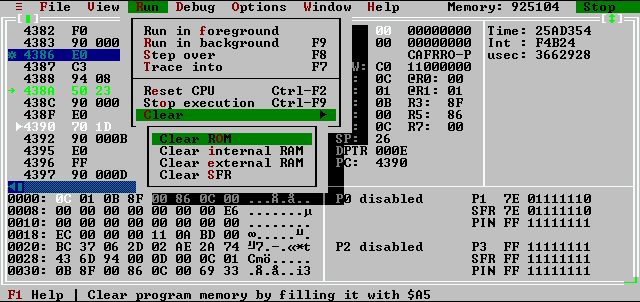

Second pane which is under disass pane is a memory dump pane which shows content of internal RAM. Activating this pane the cursor appears in the pane and the memory content can be changed simply by entering new value at requested location. Cursor can be moved by cursor keys.
Next pane shows content of registers: accumulators, program status word, general purpose registers, indirectly addressed memory locations, data pointer, and stack pointer, program counter. Note that changing content of PC can be dangerous. If you set new value to PC and this address is not found by code analyzer as instruction, disassembled list disappears from disass pane and an error message `PC is at invalid address' appears. If you are sure that PC is at an instruction (remember that code analyzer is unable to locate every instructions of the program) you can "validate" actual address by pressing Ctrl-F7 keys.
Next pane shows values of ports. P0 and P2 is disabled if simulated microcontroller is a 8X31 which needs P0 and P2 for multiplexed address/data bus.
Last pane is a passive pane, it can not be activated. It shows time elapsed since last reset. First line contains number of number of cycles (in hex) and second line the cycles that the CPU spent in interrupt routines. Last line is calculated dependent of specified XTAL frequency and it shows `real time' (symulated time) elapsed since reset (in microseconds).
At right side of menu bar there is an indicator which shows status of the simulation (CPU Stopped, Symulation Running). The screenshot shows some menus as well.